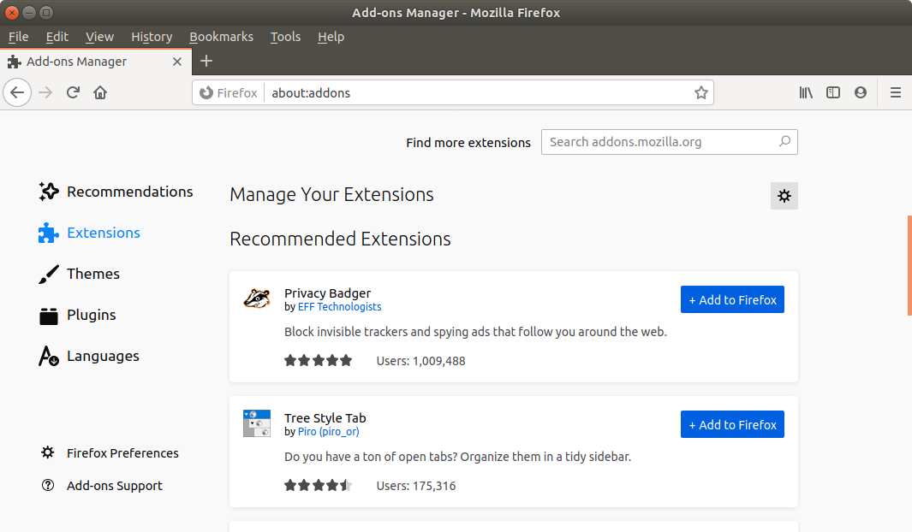
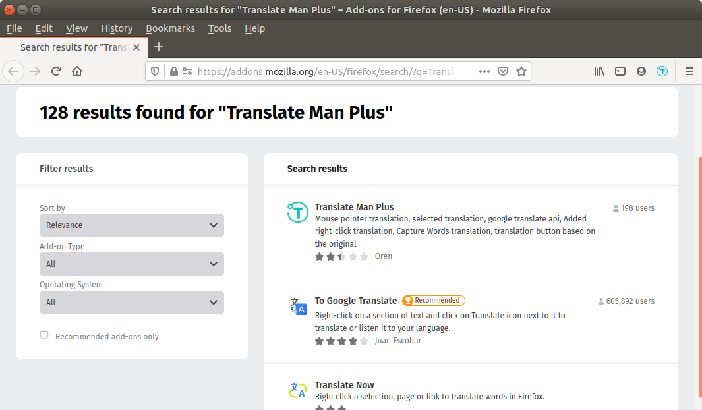
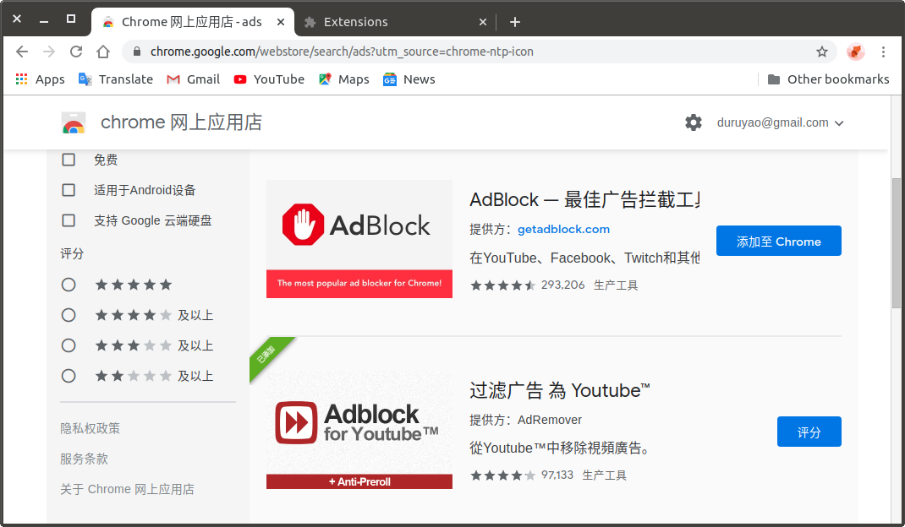

快节奏的互联网时代下，你总会有一千个砸电脑的理由，但其中不该有任何一个是网页广告。
——我说的
个人电脑的浏览器可以通过添加插件或扩展程序达到更好的使用效果，如去横幅广告、去弹窗广告、外文划线翻译、看视频跳过片头广告......
这不该再是一件鲜为人知的事情，毕竟人人都需要良好的网络环境。下面的文字试图通过两个例子为你展示这件事情并不困难（在Firefox中添加一个划线翻译插件，在Chrome中添加一个去广告插件）。
你需要的仅仅是网络、1台个人电脑与1个主流的浏览器（对于后者我个人的推荐是 Chrome >= Firefox >= Safari >= Mircosoft Edge > Internet Explorer）
Firfox
你可以从该地址中下载并安装Firefox浏览器。我们将以安装Translate Man Plus（翻译侠）为例，展示如何在Firefox中使用扩展程序。
Install Extension
你可以在Firefox按下组合键Ctrl + Shift + Aj进入Add-ons Manager（你也可以找到浏览器菜单栏最右侧的抽屉图标，单击它 -> 单击扩展）。

选中左侧扩展程序后，在右上角的搜索框输入关键字，如ads，translate等等，这里我们输入Translate Man Plus，你可以在搜索结果中找到它及同类扩展程序。

单击后进入安装页面，确认安装。安装成功后，你已经可以在Firefox右上角的菜单栏看到扩展程序的图标。
Deploy Extension
在Firefox浏览器右上角找到你的扩展程序的图标，右键单击图标，设置你的扩展程序。在本例中，我们把翻译的目标语言设置为Chinese。
尝试鼠标左键选中一段英文，在T图标弹出后，单击此图标，进行翻译。下面给出一段英文作为测试样本。
Some people have told me they don't think a fat penguin really embodies the grace of Linux, which just tells me they have never seen a angry penguin charging at them in excess of 100 mph.
—— Linus Torvalds
如果翻译成功的话，可以达到与下图类似的效果。
Manage Extension
你可以在Firefox按下组合键Ctrl + Shift + A进入（Add-ons Manager。你也可以单击浏览器菜单栏最右侧的抽屉图标，单击它 -> 单击扩展）。在此，你可以管理（开启、关闭、卸载）和设置你的所有扩展程序。
Suggestion
对于在Firefox浏览器上还应该安装那些扩展程序，我列出了一些建议，在Firefox中单击任意一个都可以进入相应的安装页面。
Chrome
你可以从该地址中下载并安装Chrome浏览器。我们将以安装Adskill（广告杀）为例，展示如何在Chrome中使用扩展程序。
Install Extension
在Chrome中使用扩展的大前提是你可以正常地访问Google。
在Chrome浏览器中单击此链接进入Web Stone（或者先单击左上角菜单栏的APPS -> 单击Web Stone）。
选中左侧扩展程序后，在其上方的搜索框输入关键字，如ads，translate等等，这里我们输入Adskill，你可以在搜索结果中找到它及同类扩展程序。

单击后进入安装页面，确认安装。安装成功后，你已经可以在Chrome右上角的菜单栏看到扩展程序的图标。
Deploy Extension
你可以在Chrome浏览器右上角找到你的扩展程序的图标，右键单击图标，设置你的扩展程序。
Manage Extension
你可以找到Chrome菜单栏最右侧的抽屉图标，单击它 -> 单击设置 -> 选择左侧的扩展程序 -> 开启开发者模式，你可以管理（开启、关闭、卸载）和设置你的所有扩展程序。
Suggestion
对于在Chrome浏览器上还应该安装那些扩展程序，我列出了一些建议，在Chrome中单击任意一个都可以进入相应的安装页面。
Remark
大部分免费网站都以投放广告作为盈利或者生存方式，在浏览器中使用去广告的扩展程序会影响网站的经济来源。我们可以选择性地暂时关闭某些插件以帮助网站正常运作，这样网站才能为我们提供更好的服务，促使互联网的运转良性循环。
祝好运。